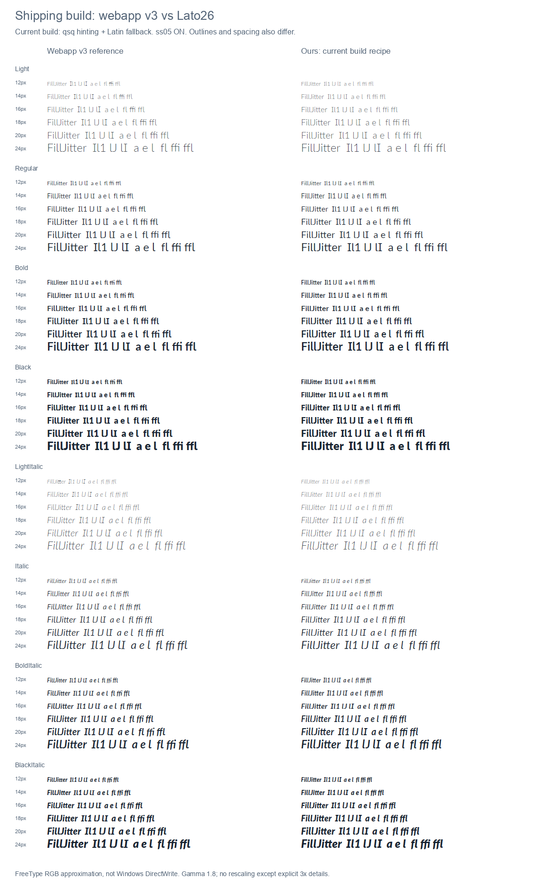

Webapp v3 versus our current build recipe: ttfautohint 1.8.4.16, qsq stem fitting with Latin fallback. No experimental font variants. Our lJ +60 / lI +40 spacing and ss05 forms are preserved. Both fonts retain tt, fi, and ffi ligatures; our ss05 fl and ffl use a separate l. Webapp v3 is a reference, not a same-outline control. No shipped files were changed.
FreeType simulation, NOT Windows DirectWrite. ss05 ON; gamma 1.8. Native sheets use 1 image pixel per sample pixel; details use 3x nearest-neighbor enlargement.
